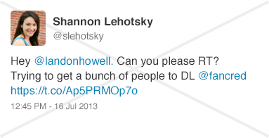
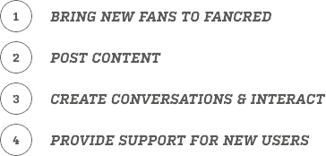
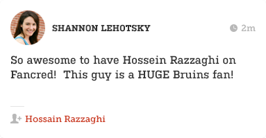
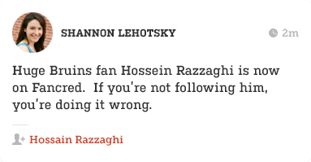
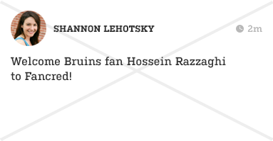
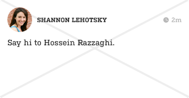
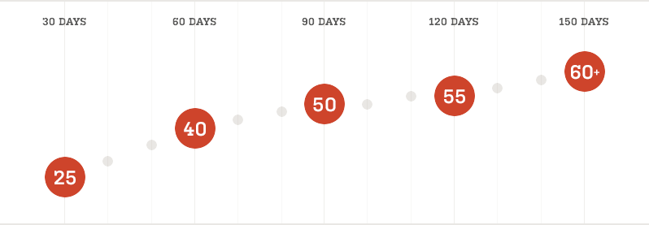

"Football is an incredible game. Sometimes it's so incredible, it's unbelievable."
-- Tom Landry


Fancred is a sports-focused social network for fans to connect and share content and opinions about their favorite teams and sports.
Fancred is a sports-focused social network for fans to connect and share content and opinions about their favorite teams and sports. Its a free app where you can post articles, gifs, photos, comments, and trash talk with other fans. The more active and engaging you are on the app, the higher your Fancred score increases.

You represent Fancred, but also yourself, so be mindful of your social presence (in and out of the app.)
Q:
Why do I need to login with Facebook?
Fancred is a platform for real sports fans. We require first and last name to register and use our app. We use Facebook login to authenticate you as a user. We will NEVER post on your behalf to your Facebook wall without your permission.
Q:
Do you have an Android App?
We currently do not have a release date that we can share but we are focused on bringing Fancred to Android as well in the future.
Q:
Are there other login options?
We will provide email login and other ways of registration in the future.
Q:
What is the purpose of Fancred?
We built Fancred to provide a better and easier way for sports fans to communicate, share, and experience sports.
Q:
What makes Fancred different?
We've built a sports focused social network for fans to connect and share content and opinions about their favorite teams and sports. Our Fancred score also makes it easy for fans to build a following and discover other fans. Many of our users are professional journalists, bloggers, or sports reporters that use Fancred to share their articles and blog posts.
Q:
Is Fancred free to download?
Yes! – Fancred is a free download for sports fans. The app is currently only available on iPhone and can be downloaded via the iTunes store.
Q:
Who monitors Fancred's content?
Fancred is a sports community for sports fans. The content by our users is not actively monitored, however, we provide simple ways for fans to report abuse or misuse of our app. Fancred reserves the right to delete any posts, comments, or accounts that are against our Terms of Service.
"Nobody in football should be called a genius. A genius is a guy like Norman Einstein."
-- Joe Theismann
Conversations on Fancred are better when more people are involved. The best way to start building your community is by inviting people to Fancred.
Start with the people you know, like your family, roommates, fraternity brothers, etc. Then, you can expand your reach by talking about Fancred on social media and to new people you meet. See examples →
Outreach to your social circles is important. Here are some good and not so good examples of social media messages you can send to get people about Fancred.

We’ll send you an arsenal of swag you can use to promote Fancred. These are great reminders for users to download the app or find more information about Fancred. They can also be used as prizes for users who engage with you in the app through trivia, caption contests, and Check-Ins.
You’ll generate buzz about Fancred around campus by getting exposure for our brand through photos, flyers, stickers, and more. Simply walking around campus and talking about the app is a simple and effective way to spread the word.
Here are a few examples of ways you can recruit new users to Fancred.
"I want to rush for 1000 or 1500 yards, whichever comes first."
-- George Rogers
As you grow and engage your school’s community, your Fancred score increases.
Here is how to do both:

To grow your school’s community in Fancred, have fun by interacting with others in the app, but have fun outside of the app too!
After getting fans to join Fancred, make sure they feel like they are an important part of the community right away by introducing them.




Engaging with users is all about content. Here are a few creative ways you can engage with users.
"People say I’ll be drafted in the first round, maybe even higher."
-- Craig Heyward
The larger and more active your community, the higher your Fancred score will rise. Refer to this milestones schedule to make sure your community is growing at a healthy rate:

Big events on campus are great opportunities to reach a large audience. Check out your school’s calendar.
Your Fancred manager will work with you to plan out a strategy for the semester.